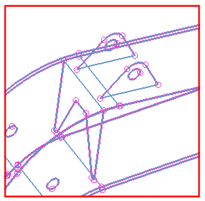

Stitch the ears to the faces of the boom top
The Stitch Edge dialog box is still open from the previous step.
Using the steps you learned previously, stitch the bottom edges of each ear to faces of the boom top. Note that there are two edges on the bottom of each ear. For each ear, select both edges and the two faces to stitch them to.
 |
Edges of: (1) BOOM_EAR_1; (2) BOOM_EAR_2
When you finish, the edges should look like those in the following figure.
